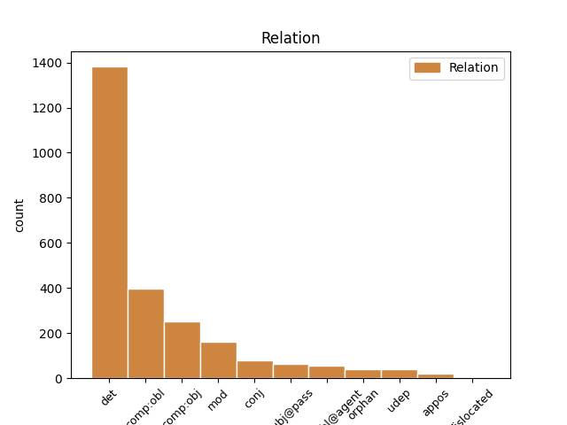
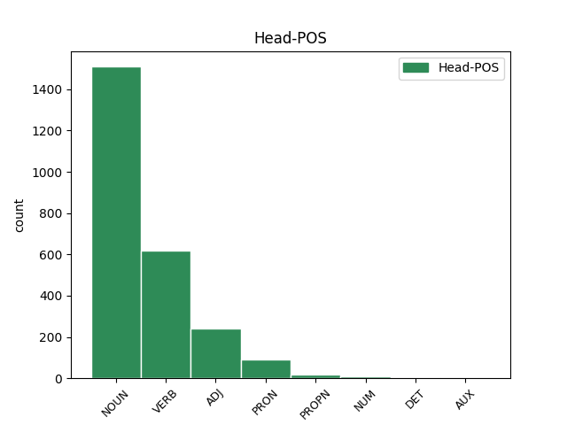
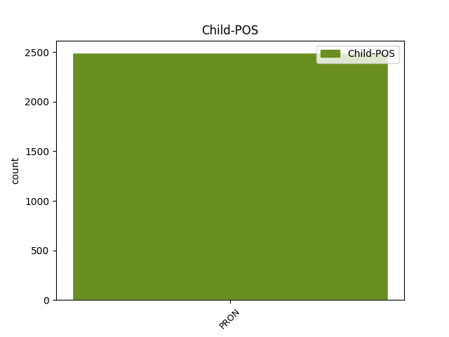

Distribution of features within this leaf



Agreement Rules sorted by frequency.
- When the dependent token is the determiner(det) of the head token, and the dependent token is PRON.
1 Audivi _ _ _ _ 0 _ _ _
2 ex _ _ _ _ 0 _ _ _
3 maioribus _ _ _ _ 0 _ _ _
4 natu _ _ _ _ 0 _ _ _
5 hoc _ _ _ _ 0 _ _ _
6 idem _ _ _ _ 0 _ _ _
7 fuisse _ _ _ _ 0 _ _ _
8 in _ _ _ _ 0 _ _ _
9 Publio _ _ _ _ 0 _ _ _
10 Scipione _ _ _ _ 0 _ _ _
11 Nasica _ _ _ _ 0 _ _ _
12 contra _ _ _ _ 0 _ _ _
13 que _ _ _ _ 0 _ _ _
14 patrem pater NOUN Nb Case=Acc|Gender=Masc|Number=Sing 0 _ _ _
15 eius is PRON Pp Case=Gen|Gender=Masc|Number=Sing|Person=3|PronType=Prs 14 det _ ref=1.109
16 illum _ _ _ _ 0 _ _ _
17 qui _ _ _ _ 0 _ _ _
18 Tiberi _ _ _ _ 0 _ _ _
19 Gracchi _ _ _ _ 0 _ _ _
20 conatus _ _ _ _ 0 _ _ _
21 perditos _ _ _ _ 0 _ _ _
22 vindicavit _ _ _ _ 0 _ _ _
23 nullam _ _ _ _ 0 _ _ _
24 comitatem _ _ _ _ 0 _ _ _
25 habuisse _ _ _ _ 0 _ _ _
26 sermonis _ _ _ _ 0 _ _ _
27 ob _ _ _ _ 0 _ _ _
28 eam _ _ _ _ 0 _ _ _
29 que _ _ _ _ 0 _ _ _
30 rem _ _ _ _ 0 _ _ _
31 ipsam _ _ _ _ 0 _ _ _
32 magnum _ _ _ _ 0 _ _ _
33 et _ _ _ _ 0 _ _ _
34 clarum _ _ _ _ 0 _ _ _
35 fuisse _ _ _ _ 0 _ _ _
1 Cum _ _ _ _ 0 _ _ _
2 his _ _ _ _ 0 _ _ _
3 propinqui _ _ _ _ 0 _ _ _
4 Indutiomari _ _ _ _ 0 _ _ _
5 qui _ _ _ _ 0 _ _ _
6 defectionis _ _ _ _ 0 _ _ _
7 auctores _ _ _ _ 0 _ _ _
8 fuerant _ _ _ _ 0 _ _ _
9 comitati comitor VERB V- Aspect=Perf|Case=Nom|Gender=Masc|Number=Plur|Tense=Past|VerbForm=Part|Voice=Pass 0 _ _ _
10 eos is PRON Pp Case=Acc|Gender=Masc|Number=Plur|Person=3|PronType=Prs 9 comp:obj _ ref=6.8.8
11 ex _ _ _ _ 0 _ _ _
12 civitate _ _ _ _ 0 _ _ _
13 excesserunt _ _ _ _ 0 _ _ _
1 Ut _ _ _ _ 0 _ _ _
2 enim _ _ _ _ 0 _ _ _
3 sermone _ _ _ _ 0 _ _ _
4 eo _ _ _ _ 0 _ _ _
5 debemus _ _ _ _ 0 _ _ _
6 uti _ _ _ _ 0 _ _ _
7 qui _ _ _ _ 0 _ _ _
8 innatus innascor VERB V- Aspect=Perf|Case=Nom|Gender=Masc|Number=Sing|Tense=Past|VerbForm=Part|Voice=Pass 0 _ _ _
9 est _ _ _ _ 0 _ _ _
10 nobis nos PRON Pp Case=Dat|Gender=Masc|Number=Plur|Person=1|PronType=Prs 8 comp:obl _ ref=1.111
11 ne _ _ _ _ 0 _ _ _
12 ut _ _ _ _ 0 _ _ _
13 quidam _ _ _ _ 0 _ _ _
14 Graeca _ _ _ _ 0 _ _ _
15 verba _ _ _ _ 0 _ _ _
16 inculcantes _ _ _ _ 0 _ _ _
17 iure _ _ _ _ 0 _ _ _
18 optimo _ _ _ _ 0 _ _ _
19 rideamur _ _ _ _ 0 _ _ _
20 sic _ _ _ _ 0 _ _ _
21 in _ _ _ _ 0 _ _ _
22 actiones _ _ _ _ 0 _ _ _
23 omnem _ _ _ _ 0 _ _ _
24 que _ _ _ _ 0 _ _ _
25 vitam _ _ _ _ 0 _ _ _
26 nullam _ _ _ _ 0 _ _ _
27 discrepantiam _ _ _ _ 0 _ _ _
28 conferre _ _ _ _ 0 _ _ _
29 debemus _ _ _ _ 0 _ _ _
1 Quae _ _ _ _ 0 _ _ _
2 contemplantes _ _ _ _ 0 _ _ _
3 expendere _ _ _ _ 0 _ _ _
4 oportebit _ _ _ _ 0 _ _ _
5 quid quis PRON Pi Case=Acc|Gender=Neut|Number=Sing|PronType=Int 0 _ _ _
6 quisque _ _ _ _ 0 _ _ _
7 habeat _ _ _ _ 0 _ _ _
8 sui se PRON Pk Case=Gen|Gender=Neut|Number=Sing|Person=3|PronType=Prs|Reflex=Yes 5 mod _ ref=1.113
9 ea _ _ _ _ 0 _ _ _
10 que _ _ _ _ 0 _ _ _
11 moderari _ _ _ _ 0 _ _ _
12 ne _ _ _ _ 0 _ _ _
13 c _ _ _ _ 0 _ _ _
14 velle _ _ _ _ 0 _ _ _
15 experiri _ _ _ _ 0 _ _ _
16 quam _ _ _ _ 0 _ _ _
17 se _ _ _ _ 0 _ _ _
18 aliena _ _ _ _ 0 _ _ _
19 deceant _ _ _ _ 0 _ _ _
1 Licet _ _ _ _ 0 _ _ _
2 ora _ _ _ _ 0 _ _ _
3 ipsa _ _ _ _ 0 _ _ _
4 cernere _ _ _ _ 0 _ _ _
5 iratorum iratus ADJ A- Case=Gen|Degree=Pos|Gender=Masc|Number=Plur 0 _ _ _
6 aut _ _ _ _ 0 _ _ _
7 eorum is PRON Pp Case=Gen|Gender=Masc|Number=Plur|Person=3|PronType=Prs 5 conj _ ref=1.102
8 qui _ _ _ _ 0 _ _ _
9 aut _ _ _ _ 0 _ _ _
10 libidine _ _ _ _ 0 _ _ _
11 aliqua _ _ _ _ 0 _ _ _
12 aut _ _ _ _ 0 _ _ _
13 metu _ _ _ _ 0 _ _ _
14 commoti _ _ _ _ 0 _ _ _
15 sunt _ _ _ _ 0 _ _ _
16 aut _ _ _ _ 0 _ _ _
17 voluptate _ _ _ _ 0 _ _ _
18 nimia _ _ _ _ 0 _ _ _
19 gestiunt _ _ _ _ 0 _ _ _
1 Sic _ _ _ _ 0 _ _ _
2 enim _ _ _ _ 0 _ _ _
3 est _ _ _ _ 0 _ _ _
4 faciendum _ _ _ _ 0 _ _ _
5 ut _ _ _ _ 0 _ _ _
6 contra _ _ _ _ 0 _ _ _
7 universam _ _ _ _ 0 _ _ _
8 naturam _ _ _ _ 0 _ _ _
9 nihil _ _ _ _ 0 _ _ _
10 contendamus _ _ _ _ 0 _ _ _
11 ea is PRON Pp Case=Abl|Gender=Fem|Number=Sing|Person=3|PronType=Prs 13 subj@pass _ ref=1.110
12 tamen _ _ _ _ 0 _ _ _
13 conservata conservo VERB V- Aspect=Perf|Case=Abl|Gender=Fem|Number=Sing|Tense=Past|VerbForm=Part|Voice=Pass 0 _ _ _
14 propriam _ _ _ _ 0 _ _ _
15 nostram _ _ _ _ 0 _ _ _
16 sequamur _ _ _ _ 0 _ _ _
17 ut _ _ _ _ 0 _ _ _
18 etiamsi _ _ _ _ 0 _ _ _
19 sint _ _ _ _ 0 _ _ _
20 alia _ _ _ _ 0 _ _ _
21 graviora _ _ _ _ 0 _ _ _
22 atque _ _ _ _ 0 _ _ _
23 meliora _ _ _ _ 0 _ _ _
24 tamen _ _ _ _ 0 _ _ _
25 nos _ _ _ _ 0 _ _ _
26 studia _ _ _ _ 0 _ _ _
27 nostra _ _ _ _ 0 _ _ _
28 nostrae _ _ _ _ 0 _ _ _
29 naturae _ _ _ _ 0 _ _ _
30 regula _ _ _ _ 0 _ _ _
31 metiamur _ _ _ _ 0 _ _ _
1 Hae _ _ _ _ 0 _ _ _
2 disciplinae _ _ _ _ 0 _ _ _
3 igitur _ _ _ _ 0 _ _ _
4 si _ _ _ _ 0 _ _ _
5 sibi _ _ _ _ 0 _ _ _
6 consentaneae _ _ _ _ 0 _ _ _
7 velint _ _ _ _ 0 _ _ _
8 esse _ _ _ _ 0 _ _ _
9 de _ _ _ _ 0 _ _ _
10 officio _ _ _ _ 0 _ _ _
11 nihil _ _ _ _ 0 _ _ _
12 queant _ _ _ _ 0 _ _ _
13 dicere _ _ _ _ 0 _ _ _
14 ne _ _ _ _ 0 _ _ _
15 que _ _ _ _ 0 _ _ _
16 ulla _ _ _ _ 0 _ _ _
17 officii _ _ _ _ 0 _ _ _
18 praecepta _ _ _ _ 0 _ _ _
19 firma _ _ _ _ 0 _ _ _
20 stabilia _ _ _ _ 0 _ _ _
21 coniuncta _ _ _ _ 0 _ _ _
22 naturae _ _ _ _ 0 _ _ _
23 tradi _ _ _ _ 0 _ _ _
24 possunt _ _ _ _ 0 _ _ _
25 nisi _ _ _ _ 0 _ _ _
26 aut _ _ _ _ 0 _ _ _
27 ab _ _ _ _ 0 _ _ _
28 iis is PRON Pp Case=Abl|Gender=Masc|Number=Plur|Person=3|PronType=Prs 0 _ _ _
29 qui qui PRON Pr Case=Nom|Gender=Masc|Number=Plur|PronType=Rel 28 appos _ ref=1.6
30 solam _ _ _ _ 0 _ _ _
31 aut _ _ _ _ 0 _ _ _
32 ab _ _ _ _ 0 _ _ _
33 iis _ _ _ _ 0 _ _ _
34 qui _ _ _ _ 0 _ _ _
35 maxime _ _ _ _ 0 _ _ _
36 honestatem _ _ _ _ 0 _ _ _
37 propter _ _ _ _ 0 _ _ _
38 se _ _ _ _ 0 _ _ _
39 dicant _ _ _ _ 0 _ _ _
40 expetendam _ _ _ _ 0 _ _ _
1 qui _ _ _ _ 0 _ _ _
2 si _ _ _ _ 0 _ _ _
3 iuvissent _ _ _ _ 0 _ _ _
4 se _ _ _ _ 0 _ _ _
5 eodem _ _ _ _ 0 _ _ _
6 loco _ _ _ _ 0 _ _ _
7 quo qui PRON Pr Case=Abl|Gender=Masc|Number=Sing|PronType=Rel 8 orphan _ ref=1.26.6
8 Helvetios Helvetii NOUN Nb Case=Acc|Gender=Masc|Number=Plur 0 _ _ _
9 habiturum _ _ _ _ 0 _ _ _
1 Sed _ _ _ _ 0 _ _ _
2 quo qui PRON Pr Case=Abl|Gender=Neut|Number=Sing|PronType=Rel 3 udep _ ref=1.64
3 difficilius difficilis ADJ A- Case=Nom|Degree=Cmp|Gender=Neut|Number=Sing 0 _ _ _
4 hoc _ _ _ _ 0 _ _ _
5 praeclarius _ _ _ _ 0 _ _ _
1 Sed _ _ _ _ 0 _ _ _
2 iis is PRON Pp Case=Dat|Gender=Masc|Number=Plur|Person=3|PronType=Prs 13 comp:obl@agent _ ref=1.72
3 qui _ _ _ _ 0 _ _ _
4 habent _ _ _ _ 0 _ _ _
5 a _ _ _ _ 0 _ _ _
6 natura _ _ _ _ 0 _ _ _
7 adiumenta _ _ _ _ 0 _ _ _
8 rerum _ _ _ _ 0 _ _ _
9 gerendarum _ _ _ _ 0 _ _ _
10 abiecta _ _ _ _ 0 _ _ _
11 omni _ _ _ _ 0 _ _ _
12 cunctatione _ _ _ _ 0 _ _ _
13 adipiscendi adipiscor VERB V- Case=Nom|Gender=Masc|Number=Plur|VerbForm=Gdv 0 _ _ _
14 magistratus _ _ _ _ 0 _ _ _
15 et _ _ _ _ 0 _ _ _
16 gerenda _ _ _ _ 0 _ _ _
17 res _ _ _ _ 0 _ _ _
18 publica _ _ _ _ 0 _ _ _
19 est _ _ _ _ 0 _ _ _
1 et _ _ _ _ 0 _ _ _
2 qualis qualis PRON Pi Case=Nom|Gender=Fem,Masc|Number=Sing|PronType=Int 4 dislocated _ ref=1COR_15.48
3 caelestis _ _ _ _ 0 _ _ _
4 tales talis ADJ Pd Case=Nom|Gender=Fem,Masc|Number=Plur 0 _ _ _
5 et _ _ _ _ 0 _ _ _
6 caelestes _ _ _ _ 0 _ _ _
Disagree Examples:
1 cum _ _ _ _ 0 _ _ _
2 esset _ _ _ _ 0 _ _ _
3 desponsata _ _ _ _ 0 _ _ _
4 mater mater NOUN Nb Case=Nom|Gender=Fem|Number=Sing 0 _ _ _
5 eius is PRON Pp Case=Gen|Gender=Masc|Number=Sing|Person=3|PronType=Prs 4 det _ ref=MATT_1.18
6 Maria _ _ _ _ 0 _ _ _
7 Ioseph _ _ _ _ 0 _ _ _
8 antequam _ _ _ _ 0 _ _ _
9 convenirent _ _ _ _ 0 _ _ _
10 inventa _ _ _ _ 0 _ _ _
11 est _ _ _ _ 0 _ _ _
12 in _ _ _ _ 0 _ _ _
13 utero _ _ _ _ 0 _ _ _
14 habens _ _ _ _ 0 _ _ _
15 de _ _ _ _ 0 _ _ _
16 Spiritu _ _ _ _ 0 _ _ _
17 Sancto _ _ _ _ 0 _ _ _
1 Ioseph _ _ _ _ 0 _ _ _
2 autem _ _ _ _ 0 _ _ _
3 vir vir NOUN Nb Case=Nom|Gender=Masc|Number=Sing 0 _ _ _
4 eius is PRON Pp Case=Gen|Gender=Fem|Number=Sing|Person=3|PronType=Prs 3 det _ ref=MATT_1.19
5 cum _ _ _ _ 0 _ _ _
6 esset _ _ _ _ 0 _ _ _
7 iustus _ _ _ _ 0 _ _ _
8 et _ _ _ _ 0 _ _ _
9 nollet _ _ _ _ 0 _ _ _
10 eam _ _ _ _ 0 _ _ _
11 traducere _ _ _ _ 0 _ _ _
12 voluit _ _ _ _ 0 _ _ _
13 occulte _ _ _ _ 0 _ _ _
14 dimittere _ _ _ _ 0 _ _ _
15 eam _ _ _ _ 0 _ _ _
1 et _ _ _ _ 0 _ _ _
2 vocabis _ _ _ _ 0 _ _ _
3 nomen nomen NOUN Nb Case=Acc|Gender=Neut|Number=Sing 0 _ _ _
4 eius is PRON Pp Case=Gen|Gender=Masc|Number=Sing|Person=3|PronType=Prs 3 det _ ref=MATT_1.21
5 Iesum _ _ _ _ 0 _ _ _
1 ipse _ _ _ _ 0 _ _ _
2 enim _ _ _ _ 0 _ _ _
3 salvum _ _ _ _ 0 _ _ _
4 faciet _ _ _ _ 0 _ _ _
5 populum _ _ _ _ 0 _ _ _
6 suum _ _ _ _ 0 _ _ _
7 a _ _ _ _ 0 _ _ _
8 peccatis peccatum NOUN Nb Case=Abl|Gender=Neut|Number=Plur 0 _ _ _
9 eorum is PRON Pp Case=Gen|Gender=Masc|Number=Plur|Person=3|PronType=Prs 8 det _ ref=MATT_1.21
1 et _ _ _ _ 0 _ _ _
2 vocabunt _ _ _ _ 0 _ _ _
3 nomen nomen NOUN Nb Case=Acc|Gender=Neut|Number=Sing 0 _ _ _
4 eius is PRON Pp Case=Gen|Gender=Masc|Number=Sing|Person=3|PronType=Prs 3 det _ ref=MATT_1.23
5 Emmanuhel _ _ _ _ 0 _ _ _
6 quod _ _ _ _ 0 _ _ _
7 est _ _ _ _ 0 _ _ _
8 interpretatum _ _ _ _ 0 _ _ _
9 Nobis _ _ _ _ 0 _ _ _
10 cum _ _ _ _ 0 _ _ _
11 Deus _ _ _ _ 0 _ _ _